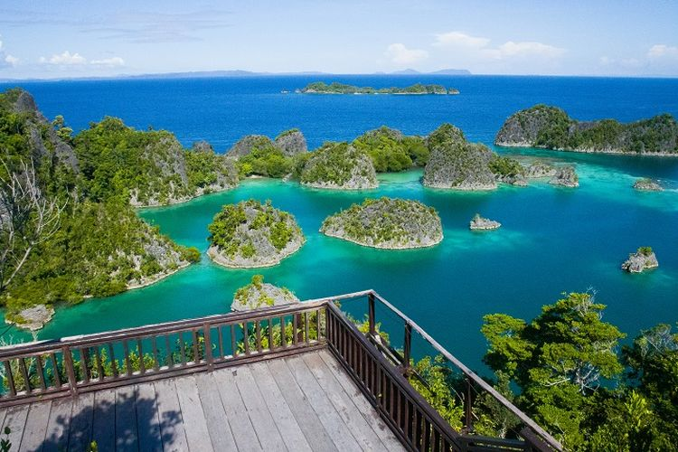
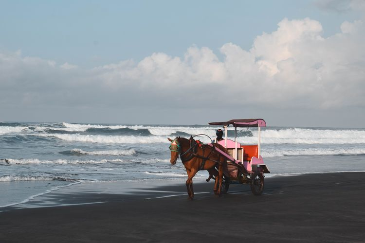
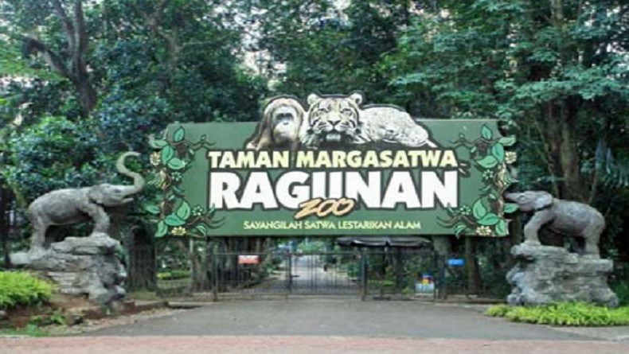

 Raja Ampat adalah sebuah kabupaten dan merupakan bagian dari Propinsi Papua Barat. Untuk mencapai Kepulauan ini, kita harus menginjakkan kaki di kota Sorong terlebih dahulu. Biasanya para wisatawan banyak menggunakan penerbangan untuk sampai ke kota ini. Setelah sampai kota Sorong, kita dapat menggunakan sejenis kapal cepat yang biasa berlayar dua kali sehari menuju Waisai, ibukota kabupaten Raja Ampat. Perjalanan hanya akan memakan waktu sekitar 2-3 jam saja dari pelabuhan Sorong, hingga sampai di pelabuhan Waisai Raja Ampat lihat detail...
 Pantai Parangtritis (Jawa: ꦥꦱꦶꦱꦶꦂ ꦥꦫꦁꦠꦿꦶꦠꦶꦱ꧀, translit. Pasisir Parangtritis) adalah tempat wisata yang terletak di Kalurahan Parangtritis, Kapanéwon Kretek, Kabupaten Bantul, Daerah Istimewa Yogyakarta. Jaraknya kurang lebih 27 km dari pusat kota. Pantai ini menjadi salah satu destinasi wisata terkenal di Yogyakarta dan telah menjadi ikon pariwisata di Yogyakarta. Pantai ini mempunyai nilai simbolis yang merupakan garis yang bersifat magis yang menghubungkan Panggung Krapyak, Keraton Yogyakarta, Tugu Yogyakarta dan Gunung Merapi yang dikenal sebagai Garis Imajiner Yogyakarta. lihat detail...

Taman Margasatwa Ragunan atau juga disebut Kebun Binatang Ragunan adalah sebuah kebun binatang yang terletak di daerah Ragunan, Pasar Minggu, Jawa Barat, Indonesia. Kebun binatang seluas 140 hektare ini didirikan pada tahun 1864.
Di dalamnya terdapat berbagai koleksi yang terdiri dari 295 spesies dan 4040 spesimen.
Ragunan sempat ditutup selama sekitar tiga minggu sejak 19 September 2005 karena hewan-hewan di dalamnya ada yang terinfeksi flu burung, tetapi dibuka kembali pada 11 Oktober 2005.
Kebun binatang ini memiliki banyak spesies hewan yang langka antara lain kakatua, orangutan, gorila, anoa dan gajah
lihat detail...
Kembali Ke Atas